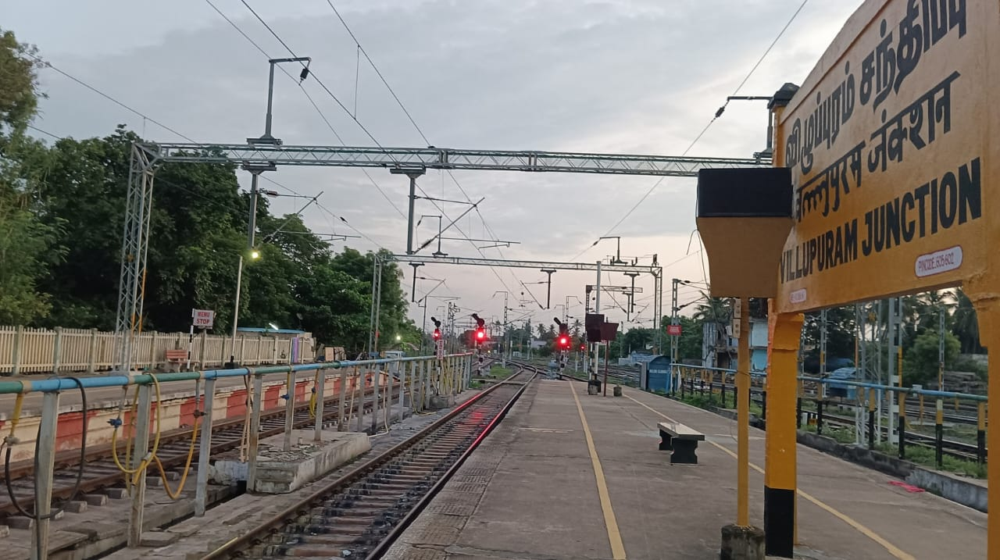

Villupuram Junction (station code: VM) is a major railway hub in Tamil Nadu, connecting Chennai to southern and central parts of the state. It features six platforms and handles over 190 trains daily, serving as a key transit point in the Southern Railway zone